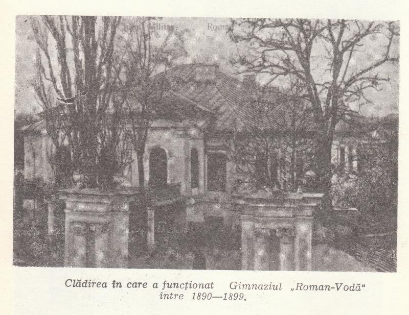
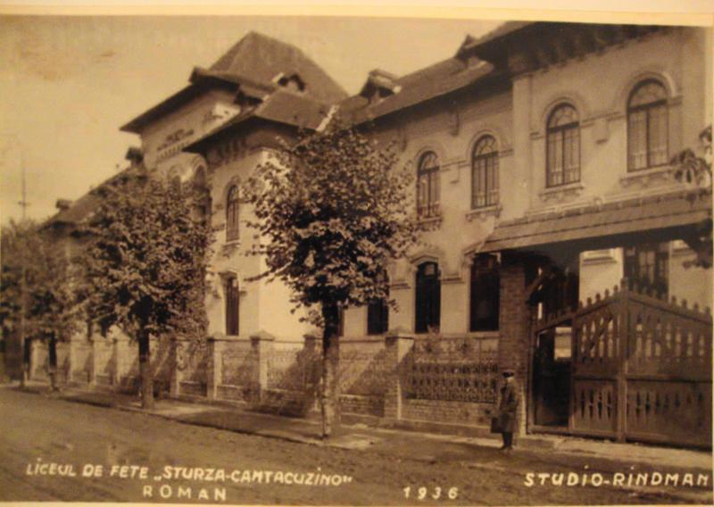

"A school for who knows what it wants and for who wants to know!"
On September 30, 1872, a new middle school opened its gates, which would eventually be one of Roman's model schools, as well as one of the most important schools in the country. The establishing of the school were due to the local efforts because, even though the Lower House has voted the establishing of the school on January 22, 1869, the Ministry has responded, multiple times, against the wishes of the town's citizens, the reason being that of the lack of funds. But Costin Braescu would draw up a memoir which contained a set of proposals, among which:
•the middle school's name had to be „Roman-Vodă”;
•the opening had to be on September 30, with solemnity;
•the local authority had to name, at the moment, two teachers(Gh. Pădure şi C.Copăcineanu).
The proposals had hardly been well received on October 20, 1872. The school runned, at the beginning, in the School No.1's building, but it became overcrowded in 1875, with the rising of the number of classrooms. Finally, the school's activity would run normally in 1881, when George Radu Melidon becomes a History teacher at the school. He, for 28 years, has given shine to the school, and to the town culture especially.
In 1890, the school was closed down, but in 1897 it received the Ministry's approval for building a new building. In 1891, Calistrat Hogas becomes a Romanian teacher and, in 1901, he is appointed as the Principal of the institution. In 1898, Nicolae Apostol, the one who was the teacher of well-known Mihail Sadoveanu and Cezar Petrescu, comes to Roman as a teacher to this school.

The school's building in 1890
During the World War 1, the building of the school was bought. Some of the students had left, some teachers tried to continue the classes until March 1918. The classes were being held outdoors, while the school was running in the town's Bishopric.
1919 was a benefic year for Roman, because the "Roman-Voda" Middle School became a high school. Because of the name's change, important modifications appeared on multiple plans. In 1933, the Ministry approves the school's request to take over "Ion Creanga" School.
World War 2 would affect even the smooth running of the school. The buildings becomes a military hospital, while the staff is evicted to Dumbraveni High School, in Tarnava Mica County.
On January 15, 1945, "Roman-Voda" and "Sturza Canatcuzino" High Schools opened their gates again, as a mixed school, but for a short time, because in March the schools would separate. After war, the high school goes through rough moments. The political impact had been very harsh, but the teachers would work hard to keep the school between the best institutions in the country. There were hard times, but also good times when the quality of the education and the endowment of the school improved.

After the instauration of the Communist regime, the high school lost the name of "Roman-Voda" and became "Scoala medie de 11 ani"(The normal school of 11 years). Despite this, the staff and the students helped the development of their school, with great efforts, passion and responsability, battling shortages, abuses and hindrances. In 1950, the school had 35 classes. In 1965 the school's library was opened, and 2 years later Hogas House became a museum and also the headquarters of "New School" Magazine. From 1970, the institution had of a boarding school with 208 beds.
In 1971, the school regains its heraldry - "Roman-Voda". Despite the hard moments the school went through, it grew year after year due to its valuable staff. Year 1972 represented the 100th anniversary of the school establishment, but also the year of review and retrospective of everything that was a journey, with its achievements and shadows, with the thousands of students and hundreds of teachers who have both built a place for spirituality and value, but also to draw conclusions and draw up plans for the future.
Everyone who studied or taught at the "Roman-Voda" High School, in this century, had a very appreciated contribution and, even though, by any reasons, couldn't be at the jubilee, anyone is proud to belong to this high school.
As you can see, "Roman-Voda" High School has contributed to the education of young generations. The reowned "romanvodist" spirit has formed, which has solidarized generations of students, graduates and teachers. And, after December 1989, the school, entering a new era, offered the students new possibilities of achievement.
Following the actions of the school's administration, starting from September 1, 2001, "Roman-Voda" High School became „Roman-Vodă” National College as a recognition of the past merits and as an impulsion for the future.